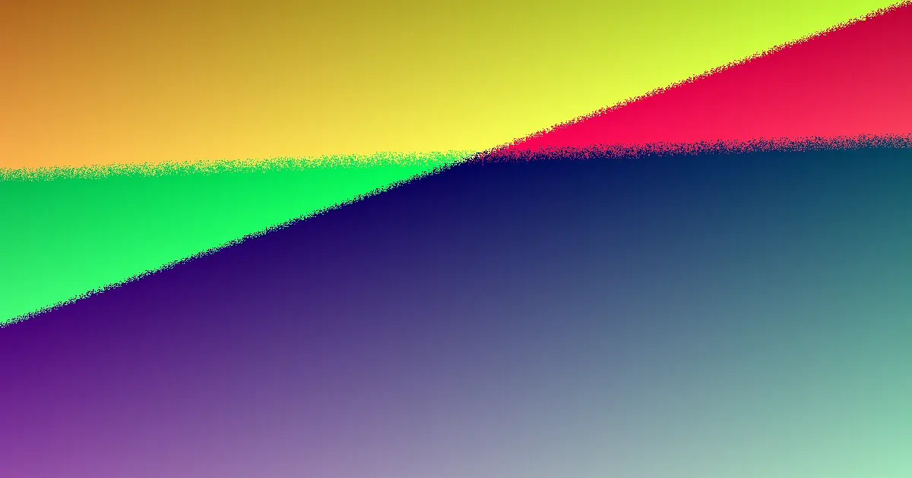

Choosing a retaining wall on the Gold Coast involves assessing site conditions, required height, and drainage needs. Costs typically range from $250 to $800 per square metre, influenced by material, access, and engineering. Walls over 1 metre or carrying a surcharge may require AS 4678 design, RPEQ Form 15 certification, and Gold Coast City Council approval. A fixed written quote detailing scope, materials, drainage, and engineering is crucial for comparison.
For local buyers, retaining walls gold coast how to choose practical decision involves more than just material choice
Retaining Walls Gold Coast How to Choose Explained
When planning a retaining wall on the Gold Coast, the primary considerations are what the wall needs to retain, its intended height, whether a surcharge load will be present, and how water will be managed behind it. This order of assessment is important because a preferred aesthetic might not be suitable for site access, drainage requirements, or the necessary approval pathways. The provided location notes highlight various settings across the region, including coastal, canal, hillside, and hinterland environments. These details should be used as prompts for obtaining quotes rather than mere descriptive elements. A confined residential block, for instance, will present specific challenges regarding access and excavation. Similarly, a sloping driveway will influence the type of machinery required. For sites with wetter conditions or clay soils, the drainage system becomes a critical factor to price accurately. Before requesting a quote, it is advisable to gather information such as the suburb or postcode, the approximate length and height of the wall, the reason for its construction, any visible signs of cracking or leaning, and the proximity of existing structures like driveways, boundaries, buildings, or other walls. This information helps distinguish between a straightforward site visit and a project that necessitates early costing for engineering.
Choosing Materials Based on Project Type
The range of services includes options like concrete sleeper, timber sleeper, besser block, rock and boulder, gabion, drainage systems, engineered solutions, and repair or replacement work. The most effective comparison is not based on which material appears strongest, but rather on its suitability for the required height, load-bearing capacity, desired finish, site access, and budget constraints. Concrete sleeper walls are described as engineered solutions using steel-reinforced concrete sleepers positioned between galvanised posts, suitable for coastal and hinterland blocks. Timber sleeper walls, constructed from H4-treated hardwood and pine, are typically used for garden features, terraces, and low boundary retaining. Besser block walls, which are core-filled and steel-reinforced, are employed for taller engineered retaining structures and can be rendered for a finished look. Rock, boulder, and sandstone walls offer a natural, battered-back aesthetic with good drainage, ideal for certain landscapes. Gabion baskets, filled with rocks, provide a strong, free-draining option for sloping or erosion-prone sites. When obtaining quotes, it is essential to ask contractors to price the same scope of work, including wall height, length, material, excavation, drainage, spoil removal, engineering, approval processes, and the final finish. A lower price is not necessarily a saving if crucial elements like drainage or approval costs are omitted from the written scope.
Making Drainage a Visible Part of the Plan
The provided information treats drainage as an integral component of the retaining wall system. It specifies the use of ag drain, gravel, and geofabric behind every wall, highlighting its importance in sandy, clay, and hinterland soil conditions. For homeowners, a practical step is to ensure that the allowance for drainage is explicitly stated in the quote. Inquiries should cover the discharge point for the ag pipe, the type and extent of the gravel zone included, whether geofabric is specified, and how surface water will be prevented from accumulating behind the wall. For projects involving the replacement of an existing wall, it is important to ascertain whether the failure was due to water issues, footing movement, material degradation, or a change in the load behind the wall. The answer to this question will influence whether a repair is feasible or if a complete replacement is the more appropriate solution. For an alternative perspective on this topic, a neighbouring guide on retaining wall planning for the Gold Coast offers a different approach to framing project considerations.
Who This Guide Is For
This guide is intended for homeowners, owner-builders, and property managers who are planning a new residential retaining wall, need to replace a failing wall, or are seeking to understand the inclusion of engineering, drainage, or approval costs in their quotes. It is less applicable to large-scale civil engineering projects or situations where a designer has already provided a comprehensive construction package. The scenarios for retaining walls vary significantly. A low garden terrace, for example, is primarily a decision about materials, access, and finish. A boundary wall situated close to another structure will require careful consideration of load, setbacks, and necessary approvals. A wall that is cracked, bulging, or leaning needs a thorough assessment before any cosmetic repairs are undertaken. Taller walls, or those supporting additional loads, necessitate clarification of the engineering and council approval processes before quotes can be meaningfully compared. The source text mentions various property types, such as waterfront homes, older low-set houses, properties with steep driveways, planned suburban estates, canal-front residences, acreage properties, bush blocks, and newer developments. These descriptions should be used as indicators for potential site challenges related to access, soil conditions, drainage, slope, and nearby infrastructure.
- Prepare Your Project Details. Note down the suburb, purpose of the wall, approximate height and length, any access challenges, and symptoms like cracking, leaning, or drainage issues.
- Understand Material Options. Consider concrete sleepers, timber, besser blocks, rock, or gabions based on height, load, aesthetics, and budget. Ensure drainage is factored in.
- Request Detailed Quotes. Ask for fixed written quotes that clearly list scope, materials, excavation, spoil removal, drainage, engineering, and approval costs.
- Verify Engineering and Approvals. For walls over 1m or with surcharge loads, confirm if AS 4678 design and RPEQ Form 15 certification are included, along with council approval.
- Compare Quotes Carefully. Evaluate quotes not just on price, but on the completeness of the scope and the clarity of inclusions, especially for drainage and engineering.
Common questions
How much does a retaining wall cost on the Gold Coast? On the Gold Coast, retaining walls typically range from approximately $250 to $800 per square metre. This cost varies based on the material used, the wall's height, site accessibility, and whether engineering services are required. Timber sleeper walls are generally at the lower end of this range, while concrete, block, and stone walls tend to be higher due to increased labour and engineering needs. These figures usually encompass materials and labour but may not include council approvals or complex excavation work.
Do I need council approval for a retaining wall in Gold Coast City? Gold Coast City Council generally requires approval for retaining walls, particularly those exceeding 1 metre in height or supporting a surcharge load. Such walls may need to comply with AS 4678 standards and require RPEQ Form 15 design certification. It is essential to confirm the specific requirements with the local council before commencing construction.
What is the most important factor when choosing a retaining wall material? The most important factor is selecting a material that suits the specific job requirements, including the wall's height, the load it needs to retain, site access, desired finish, and your budget. While aesthetics are important, structural integrity and suitability for the site conditions, such as soil type and drainage, are paramount.
Retaining walls on the Gold Coast.